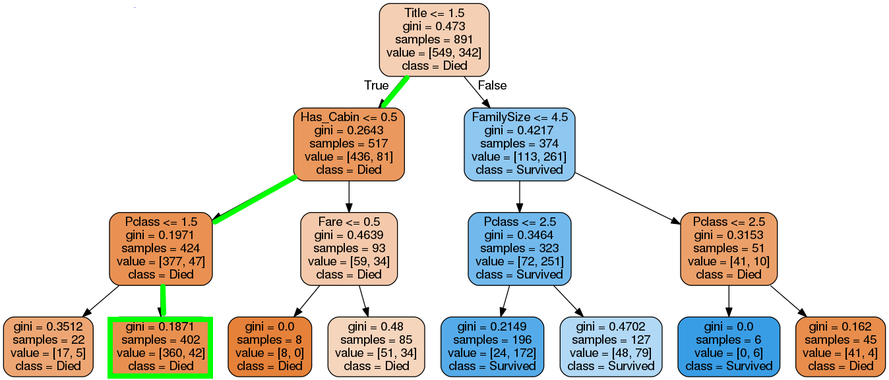
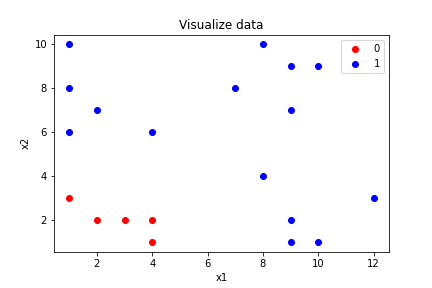
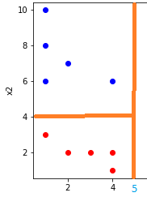
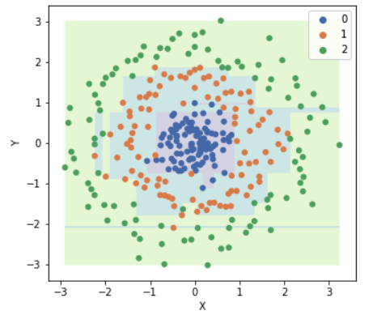
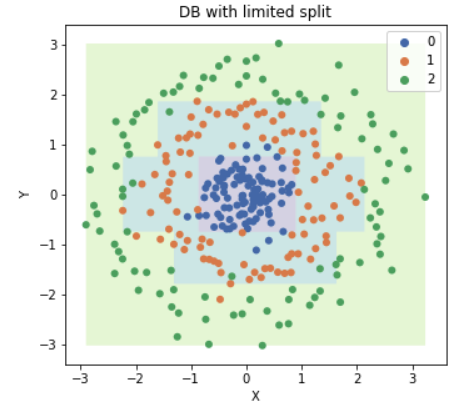
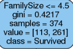

Decision Tree algorithm¶
Đóng góp: Tuấn Nguyễn.
Decision Tree là thuật toán supervised learning, có thể giải quyết cả bài toán regression và classification.
Giới thiệu về thuật toán Decision Tree¶
Một thuật toán Machine Learning thường sẽ có 2 bước:
Huấn luyện: Từ dữ liệu thuật toán sẽ học ra model.
Dự đoán: Dùng model học được từ bước trên dự đoán các giá trị mới.
Bước huấn luyện ở thuật toán Decision Tree sẽ xây dựng ra một cây quyết định. Ví dụ, như với dữ liệu Titatic, thuật toán Decision Tree sẽ học ra model dạng cây như thế này

Thông tin Title được lấy ra từ trường Name. Sau đó trường Title, Sex được chuyển về dạng số
title_mapping = {"Mr": 1, "Miss": 2, "Mrs": 3, "Master": 4, "Rare": 5}
sex_mapping = {'female': 0, 'male': 1}
Sau đó ở bước dự đoán, thuật toán sẽ dựa vào thông tin của hành khách và đi theo các điều kiện của cây từ trên xuống dưới để cho ra dự đoán xem người đó sống hay chết. Ví dụ với thông tin khách hàng thế này:
import pandas as pd
data = pd.read_csv('../data/titanic/train.csv')
data.head(1)
Từ trường Name, mình sẽ lấy được Title là “Mr” rồi chuyển về dạng số là 1.
Title = 1 <= 1.5, điều kiện đúng nên kiểm tra tiếp điều kiện ở node con phía dưới bên trái.
Has_Cabin = 0 <= 0.5, điều kiện đúng nên kiểm tra tiếp điều kiện ở node con ở dưới bên trái (trường Cabin là NaN nên has_cabin thành 0).
Pclass = 3 >= 1.5, điều kiện sai nên xuống node con bên phải, node này là node lá có kết quả dự đoán luôn chứ không cần kiểm tra điều kiện nữa.
Lấy thông tin từ node lá, dự đoán class = Died.

Ở cây quyết định này mình thấy 2 kiểu node:
Node có điều kiện kiểm tra, mình gọi là node điều kiện. Các node điều kiện đều có 2 node con ở dưới.
Node lá, không có điều kiện mà có kết quả dự đoán. Các node lá không có node con.
Bây giờ thì mình biết có cây quyết định thì sẽ dự đoán 1 giá trị mới như thế nào rồi. Vấn đề bây giờ là làm thế nào để xây dựng cây quyết định.
Xây dựng cây quyết định¶
Bài toán là giờ mình có dữ liệu, làm thế nào để xây dựng ra cây quyết định.
Giả sử mình có bài toán phân loại 2 lớp và mỗi dữ liệu có 2 thuộc tính là \(x_1\) và \(x_2\). Dữ liệu của mình khi vẽ biểu đồ scatter lên sẽ như thế này.

Với dữ liệu này, nếu yêu cầu mọi người dùng giấy bút vẽ cây quyết định mọi người sẽ làm thế nào?
Xét điều kiện \(x_1 > 5\), giống như một đường phân chia, chia dữ liệu làm 2 phần, 1 phần thỏa mãn điều kiện và 1 phần không thỏa mãn điều kiện.

Mình thấy nếu \(x_1 > 5\) đúng thì tất cả các dữ liệu thuộc lớp 1, thế nên mình sẽ dùng lớp lá để dự đoán đây là lớp 1 luôn. Ngược lại thì mình thấy dữ liệu có cả lớp 1 và lớp 0, nên mình tiếp tục thêm điều kiện \(x_2 > 4\)

Nếu điều kiện \(x_2 > 4\) đúng thì mình thấy các dữ liệu thuộc lớp 1, ngược lại các dữ liệu thuộc lớp 0. Do đó 2 node con của node điều kiện trên đều là node lá để cho ra kết quả dự đoán.
Cuối cùng mình sẽ được cây quyết định như thế này.

Vậy tiêu chí gì để mình tìm được điều kiện đầu tiên? tại sao lại là \(x_1\) và tại sao lại là 5 mà không phải là một số khác? Nếu mọi người để ý ở trên thì mình sẽ tạo điều kiện để tách dữ liệu thành 2 phần mà dữ liệu mỗi phần có tính phân tách hơn dữ liệu ban đầu. Ví dụ: điều kiện \(x_1 > 5\), tại nhánh đúng thì tất cả các phần tử đều thuộc lớp 1.
Thế điều kiện \(x_1 > 8 \) cũng chia nhánh đúng thành toàn lớp 1 sao không chọn? vì nhánh đúng ở điều kiện \(x_1 > 5\) chứa nhiều phần tử lớp 1 hơn và tổng quát hơn nhán đúng của \(x_1 > 8\)
Còn điều kiện \(x_1 > 2 \) thì cả 2 nhánh con đều chứa dữ liệu của cả lớp 0 và lớp 1.
Mình biết tiêu chí để chọn rồi, nhưng tiêu chí mình vừa đề ra dựa vào mắt và cảm quan, máy tính thì cần số liệu để đánh giá để so sánh các điều kiện phân tách. Các chỉ số để đánh giá ra đời, bao gồm: entropy, information gain.
Với mỗi điều kiện để tách thì sẽ có chỉ số information gain tương ứng, chỉ số information gain càng cao thì việc tách càng tốt. Do đó mình sẽ duyệt qua hết các thuộc tính của dữ liệu, mỗi thuộc tính thử các giá trị để tách khác nhau, rồi chọn điều kiện có chỉ số information gain cao nhất để tách, và tiếp tục như thế cho tới node lá, chỉ gồm dữ liệu 1 lớp duy nhất.
Chi tiết về thuật toán ID3, entropy, information gain được viết ở blog Machine Learning cơ bản
Ngoài ID3 còn có các thuật toán khác cho Decision Tree như:
C4.5: Successor of ID3
CART: Classification And Regression Tree
CHAID: Chi-square automatic interaction detection Performs multi-level splits when computing classification trees
MARS: multivariate adaptive regression splines
Phần dưới mình sẽ trình bày về gini index (chỉ số đánh giá được sử dụng trong thuật toán CART).
Gini index¶
Gini index tương tự như information gain, dùng để đánh giá xem việc phân chia ở node điều kiện có tốt hay không.
Để tính Gini index, trước hết mình sẽ tính chỉ số Gini, chỉ số Gini tính ở từng node.
\( \begin{aligned} \displaystyle Gini = 1 - \sum_{i=1}^C(p_i)^2 \end{aligned} \)
Trong đó C là số lớp cần phân loại, \( \displaystyle p_i = \frac{n_i}{N}, n_i\) là số lượng phần tử ở lớp thứ i. Còn N là tổng số lượng phần tử ở node đó, \(\displaystyle N = \sum_{i=1}^N n_i \Rightarrow \sum_{i=1}^N p_i = 1\).
Do \(0 <= p_i <= 1 \forall i\) và \(\displaystyle \sum_{i=1}^N p_i = 1\) nên:
\( \displaystyle \sum_{i=1}^C(p_i)^2 <= (\sum_{i=1}^C p_i)^2 = 1 \Rightarrow Gini \geq 0, \mbox{ dấu bằng xẩy ra khi } \exists j: p_j = 1 \mbox{ và } p_k = 0 \mbox{ }\forall k \neq j\)
\( \displaystyle \sum_{i=1}^C(p_i)^2 >= \frac{(\sum_{i=1}^C p_i)^2}{C} = \frac{1}{C} \Rightarrow Gini \leq \frac{C-1}{C}, \mbox{ dấu bằng xẩy ra khi } p_j = \frac{1}{C} \mbox{ }\forall j\)

Mọi người thấy:
Ở node \(x_1 > 5\) thì có tất cả 20 điểm dữ liệu, gồm 5 điểm lớp 0 và 15 điểm lớp 1, gini = 0.375.
Ở node lá ở dưới, tất cả dữ liệu thuộc lớp 1 nên gini = 0.
=> Chỉ số gini thấp nhất (=0) khi node đó chỉ chứa dữ liệu của 1 lớp duy nhất, chỉ số gini cao nhất khi dữ liệu các lớp ở trong node đó cân bằng (đã chứng minh ở trên) => Ta mong muốn khi phân tách thì chỉ số gini ở những lớp con thấp.
Sau khi tính được chỉ số gini ở node cha và 2 node con được tính, ta tính được chỉ số gini index:
\( \begin{aligned} gini\_index = gini(p) - \sum_{i=1}^K \frac{m_k}{M} gini(c_k) \end{aligned} \)
Trong đó \(gini(p)\) là chỉ số gini ở node cha, K là số node con được tách ra, \(gini(c_k)\) là chi số gini ở node con thứ k. M là số phần tử ở node p, \(m_i\) là số phần tử ở node con thứ i, \(\sum_{i=1}^K m_i = M\)
Thực ra gini index tính độ lệch gini của node cha với tổng các giá trị gini có đánh trọng số của các node con.
Như ở ví dụ mình ở trên thì:
\( \begin{aligned} gini\_index = 0.375 - (\frac{10}{20}\times 0 + \frac{10}{20}\times 0.5) = 0.125 \end{aligned} \)
Vì khi tách mình muốn chỉ số gini ở các node con nhỏ, nên gini index mình mong muốn càng lớn càng tốt. Thuật toán CART khá giống ID3, chỉ thay gini index bằng information gain. Để tìm điều kiện tách, mình thử ở tất các thuộc tính, mỗi thuộc tính thử một số giá trị chia, rồi so sánh xem điều kiện nào chỉ số gini index giảm nhiều nhất thì sẽ chọn để chia.
Thực ra, kết quả dùng với gini index hay information gain khá giống nhau, có chăng thì gini index dễ tính hơn vì không phải tính log, chi tiết so sánh mọi người xem ở đây.
Overfitting¶
Các thuật toán Decision Tree nói chung nếu xây dựng cây quyết định đủ sâu thì sẽ tách được các node lá chỉ chứa dữ liệu một lớp nhất định, nên mô hình rất dễ bị overfitting.

Mọi người thấy mô hình Decision Tree trên overfitting với dữ liệu, và tạo ra đường phân chia rất lạ. Thường có 2 cách giải quyết khi model Decision Tree bị overfitting:
Dừng việc thêm các node điều kiện vào cây dựa vào các điều kiện:
Giới hạn độ sâu của cây.
Chỉ định số phần tử tối thiểu (n) trong node lá, nếu 1 node có số phần tử ít hơn n thì sẽ không tách nữa.
Phần sau mình sẽ học thuật toán Random Forest được xây dựng từ thuật toán Decision Tree và tránh được overfitting.
Ví dụ mô hình trên khi mình giới hạn độ sâu của cây là 5 và số phần tử tối thiểu trong lớp lá là 5. Mọi người thấy mô hình đỡ bị overfitting hơn, và đường phân chia tổng quát dữ liệu hơn.

Các node trong hình cây quyết định sinh ra bởi dữ liệu Titanic¶

Đầu tiên là điều kiện để tách.
Sau đó là chỉ số gini ở node nó.
Tổng số dữ liệu ở node đó.
Số lượng dữ liệu là Died và Survived, lần lượt là 113 và 261, nhận xét: 113 + 261 = 374 (tổng số sample).
Dự đoán ở node này, nếu cần. Do 261 > 113 => dự đoán là Survived.

Số dữ liệu ở node cha bằng tổng số dữ liệu ở 2 node con, 517 + 374 = 891.
Tham khảo: